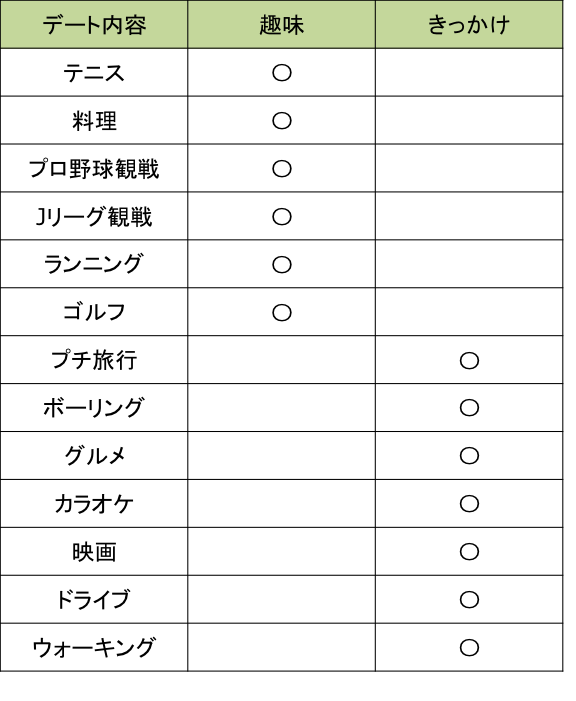
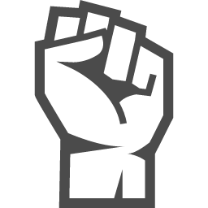

『趣味デート』と『きっかけデート』には大きく分けて、2点違いがあります。
①デート内容 ②マッチングシステム が異なります。
デート内容の定義が、『趣味デート』と『きっかけデート』で異なります。
『趣味デート』は、習慣化された趣味を持っている人のためのデート
『きっかけデート』は、ときどき行う趣味を持っている人のデート
具体的なデートの分類は下記になります。

「趣味というほどのものは...」という方は、まずは誰でも楽しめる『きっかけデート』から参加してみてはいかがでしょうか？

経験年数やスキルをもとにレベル分け
興味のあるデートを選ぶ
【趣味デートのみ】

もう一度会いたいかどうかの評価制を導入
運営側で集計し、ご連絡
【きっかけデートのみ】
『きっかけデート』では、「もう一度会いたい！」と思っても声をかけにくいからです。
『趣味デート』であれば、同じ趣味をつながりから、「次は○○日で！」や「友達も呼んで2対2で！」みたいに誘いやすくなります。
なので、『きっかけデート』だけ、評価システムを設けて、恋愛に発展させるためにサポートさせて頂きます。